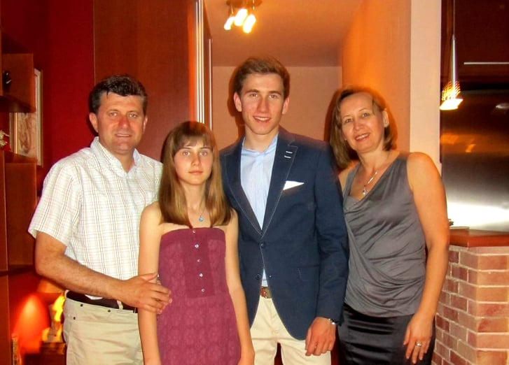

My name is Kristina Koneva and I was born in 2001 in Skopje, Macedonia, where I currently live. I finished elementary school at "Vera Ciriviri – Trena" and high school at "Orce Nikolov". At the moment, I am a student at the "Ss. Cyril and Methodius University – Skopje", particularly at the Faculty of Computer Science and Engineering in the SEIS (Software Engineering and Information Systems) undergraduate study program. I am a very out-going, adventurous person who enjoys spending time with family and friends. I like to stay active, so I like playing sports, like tennis and football, and doing different outdoor activities, like hiking, skiing, riding a bike. When I stay at home, I usually watch films or TV shows. My favorite TV shows are Modern Family (the humor in this show matches my definition for being funny, so it is always a great choice if I want to have a good laugh) and Money Heist (I like how intelligently made and suspenseful this show is).
My mother Daniela, my father Borche and my brother Evgenij are the most important people in my life. My parents have shaped my personality and what I am today is a reflection of their care and love towards me. When I need to make an important decision, they are the first people I turn to because I really value their advice. They have always respected my opinions and allowed me to grow as an individual with constantly encouraging me to thrive towards my goals. I extremely admire them and I am unconditionally grateful for having them as my parents.


My brother, Evgenij, has always been my role model. He is older than me, therefore, I have the opportunity to learn a lot from him. Even though, as every other siblings, we often fight, I cannot deny the fact that we have a ton of stuff in common. Playing tennis or skiing are some of our favorite things to do together. Evgenij has been my biggest protector since I was born and as my parents have told me, he would be the first one to wake up and get concerned why I was crying as a baby in the middle of the night. What I absolutely respect and appreciate about him is that I can be 100% sure that he is always honest with me when I ask for his opinion about anything. When everybody else sugar coats the things for me, I can trust my brother to actually bring me back to reality.
Since I love socializing, my friends are a huge part in my life. I always prefer to hang out with friends than spend my free time alone. I have known most of my closest friends for years now, so they even feel like family. I also love meeting new people, therefore, our friend group often extends by building new friendships. We do all kinds of stuff together, from playing sports, hiking, eating out to dancing at parties, going on vacations or anything that we find fun.